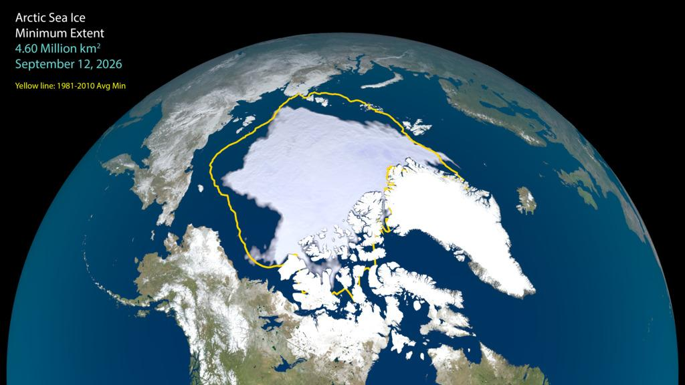

The Science
What Causes Climate Change?
Certain gases in the atmosphere hold in some of Earth's heat. This natural greenhouse effect helps keep Earth livable. Human activities, including burning coal, oil, and natural gas, add more heat-trapping gases to the atmosphere and increase warming. Changes in land use also affect the balance of carbon in the environment (NASA, n.d.).

Why Does It Matter?
A warming climate can affect extreme heat, rainfall, drought, melting ice, and sea level. These changes do not affect every location in the same way, but they can influence ecosystems, infrastructure, and the health of communities (NASA, n.d.; NOAA, n.d.).
Major Climate Effects
| Effect | What it means | Why it matters |
|---|---|---|
| Rising temperatures | Long-term warming | More frequent or intense hot periods in many places |
| Sea level rise | Water levels increase | Greater coastal flood risks |
| Changing rainfall | Wet and dry patterns shift | Flood or drought challenges |
| Melting ice | Glaciers and ice sheets lose ice | Influences sea levels and habitats |
